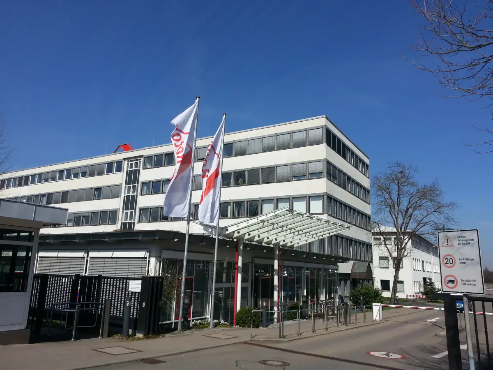
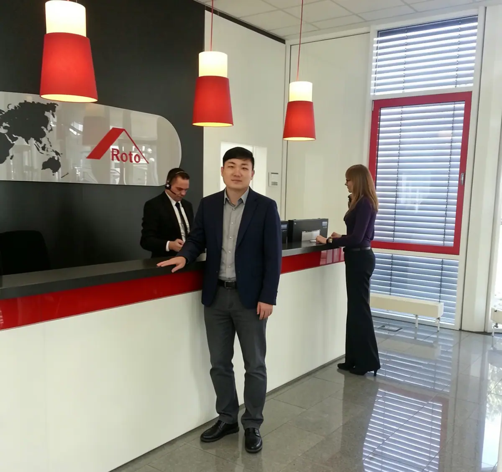
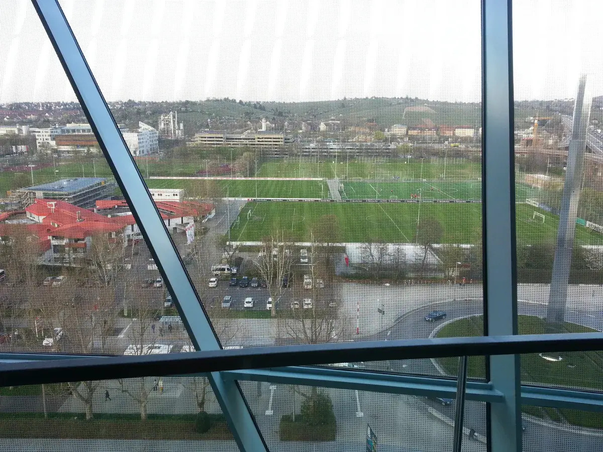
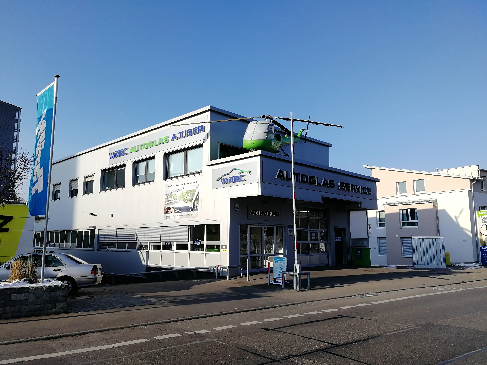
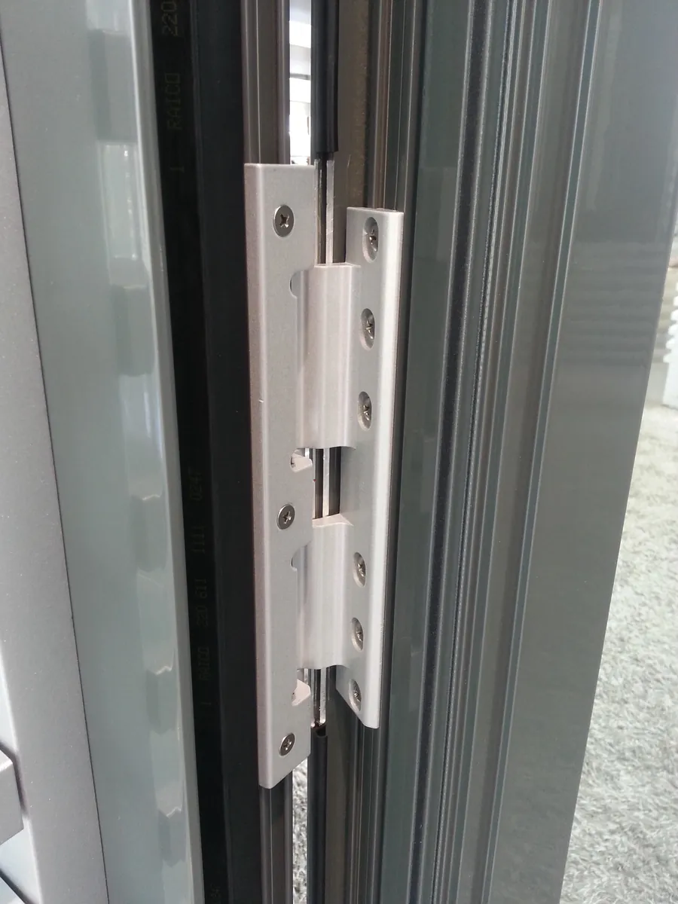

斯图加特：第二次回到诺托，和一座"养马场"长出来的德国工业心脏
Stuttgart — returning to Roto, and the German industrial heart grown from a 'stud farm'.

这是第二次回到莱因费尔登-埃希特丁根的诺托总部。相比 2012 年第一次去、还带着点"参观"心态，这次已经完全是工作状态——作为 General Manager，回总部开会、对接业务，是常规动作，不再是"考察"。
2014 年，诺托发生了什么


查了一下当年公司对外披露的数字，有一个细节挺值得记一笔：2013 财年，诺托刚创下公司历史上最高的一次营收纪录，658 百万欧元，超过了此前 2011 年 656 百万欧元的旧纪录，管理层当时的说法是"在困难和不可预测的市场里"仍然做到了历史最佳。带着这个势头进入 2014 年，公司对外的表态是"继续保持 2% 到 5% 的增长"，但同时也罕见地坦承市场风险还在上升——原本被视为重要增长引擎的中国市场，这一年"不再像过去那样顺畅"，俄罗斯市场则被形容为"完全无法预测"。
这段话现在读来，对我来说是有分量的——2014 年"中国市场不再那么顺"这句话，不是我这些年回忆时的印象，是公司当年财报里真实写出来的判断。也就是说，那一年我在 Roto 中国业务这条线上感受到的压力，不是个案，是总部账面上也承认的事实。这比任何"新产品发布"的故事都更贴近我当时的真实处境。
从产品端看，2014 年这一年诺托并没有推出革命性的新系统——真正的下一代五金系统 Roto NX，是 2017 年才正式发布的；把密封件厂商 Deventer 集团收入麾下，也是 2015 年的事。所以准确地说，2014 年更像是诺托在一个增长放缓、多个海外市场同时承压的年份里"练内功"的一年：靠效率管理和成本控制守住上一年创下的纪录，而不是靠一款新产品讲一个新故事。这也提醒我，不是每一次回总部都会有戏剧性的变化——有时候"没有大新闻"本身，就是那一年真实的状态。
一家企业能不能穿越周期，不看它每年有没有新故事，看它在没有故事的年份里，能不能守住阵地。
——董立鑫 海鑫汇创始人兼执行总裁，新加坡世贸秘书长兼首席运营官
斯图加特：一座从"养马场"长出来的工业城市
诺托总部所在的斯图加特，名字本身就藏着这座城市的起点。"斯图加特"（Stuttgart）这个词源自古德语"Stutengarten"，大致意思是"母马花园"或者"种马场"。大约公元 950 年，神圣罗马帝国皇帝奥托一世的儿子、士瓦本公爵鲁道夫在这里建立据点，专门用来养马——尤其是给他父亲的骑兵部队供马。往后大约到 1300 年，斯图加特成了符腾堡伯爵的行宫所在地，1496 年符腾堡升格为公国，再往后又成为王国，斯图加特就一路做到了符腾堡国王的王宫所在地。二战期间，这座城市的市中心几乎被盟军空袭彻底摧毁，和纽伦堡的命运有点像，都是在废墟上重新长出来的。
而今天大家熟悉的斯图加特，是另一副面孔：世界第一辆汽车由戴姆勒在这里造出来，梅赛德斯-奔驰和保时捷的总部都在这座城市，博世也把总部设在这里，再加上 IBM 等企业，让一座人口不算特别大的城市拿到了德国第六的经济体量。斯图加特证券交易所是德国第二大证交所，当地还聚集了 6 座夫琅禾费研究所、2 座马克斯·普朗克研究所，德国全国大约 11% 的科研成果产自这个区域。一座曾经的养马场，最后变成了德国最密集的工业和科研心脏之一——这个反差，和纽伦堡从"帝国荣光"变成"会展之城"的路数不太一样，斯图加特走的是一条更连贯的产业升级路线：从马场，到工业重镇，中间没有太大的断裂。
诺托总部选在紧挨着斯图加特的莱因费尔登-埃希特丁根，某种程度上也是沾了这个产业生态的光——奔驰、保时捷、博世这些邻居企业，共同撑起了当地一整套成熟的供应链、精密制造能力和工程师资源，诺托这样一家做门窗五金和屋顶技术的隐形冠军，能在这里稳稳扎根近 90 年，离不开这片土壤。


本文整理自董立鑫（Bruce Dong）海外产业考察记录，首发于海鑫汇。